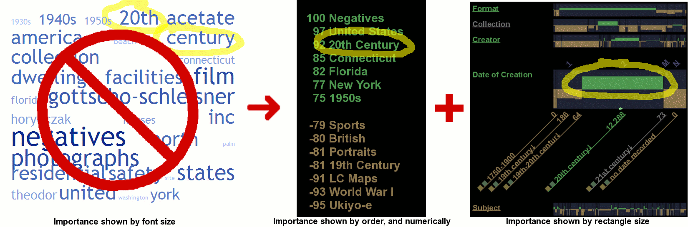

Welcome to Bungee View |
Foo |
Bungee View is designed to support non-technical users in gaining an understanding of an image collection as a whole, and in finding patterns in their meta-data, while they search and browse. Since this is a research project, your usage will be recorded to help improve Bungee View. We will use your IP address to track your repeat visits, but will not attempt to identify you as a person. Feedback is welcome at (Mark Derthick).
For a brief tour, watch this two minute video as an avi or a worse quality mov (the DivX codec should work for either).
* If your browser doesn't know how to open this link, it means you need to install Java 1.4 or later, which includes the Java Web Start plug-in.
Bungee View enhances browsing image collections with two overview visualizations that replace Tag Clouds:
|
 |
||||
|
|
|
|
|
|
|
Tag Cloud · Quickly summarizes a set of documents · Up to ~30 characteristic tags |
|
Top Tags · Quickly summarizes a set of documents · Up to ~30 characteristic and uncharacteristic tags |
|
Tag Wall · More quantitative and detailed summaries, and also supports searching and filtering · Summarizes: rectangle width shows that more than half of the works in the collection are from the 20th century · Compares: rectangle height upward and green color shows that the current result set includes an even higher percentage of 20th century works than the collection as a whole. · Up to ~1000 tags (and even more when you zoom or filter) · Organizes tags by category, like Date and Format · Systematic and consistent tag layout creates stable “maps” of the collection · Shows what is not present · With thousands of organized and sorted tags to filter on, you may not even need the text search box. This is important in image collections with little text, since the keywords you have in mind may not occur at all. |
Web search engines have attracted widespread demand for information retrieval from unstructured documents. The number of structured and semi-structured documents available on the Web is also huge, and collections of these are more amenable to data mining. Yet there has been no similar explosion of interest in this kind of exploration. Finding patterns in databases of political contributions, environmental data, or hospital and school performance would surely interest many citizens. The main research question for this project is how to support such exploration for users with little or no training in statistics or programming. In contrast to other data-mining systems, Bungee View focuses on learnability, responsiveness, robustness, and providing a satisfying user experience.
Bungee View version 11/2007, Copyright (C) 2007 Mark Derthick
Bungee View comes with ABSOLUTELY NO WARRANTY; This is free software,
and you are welcome to redistribute it under certain conditions; Choose
"About Bungee View" on the Help menu for details.